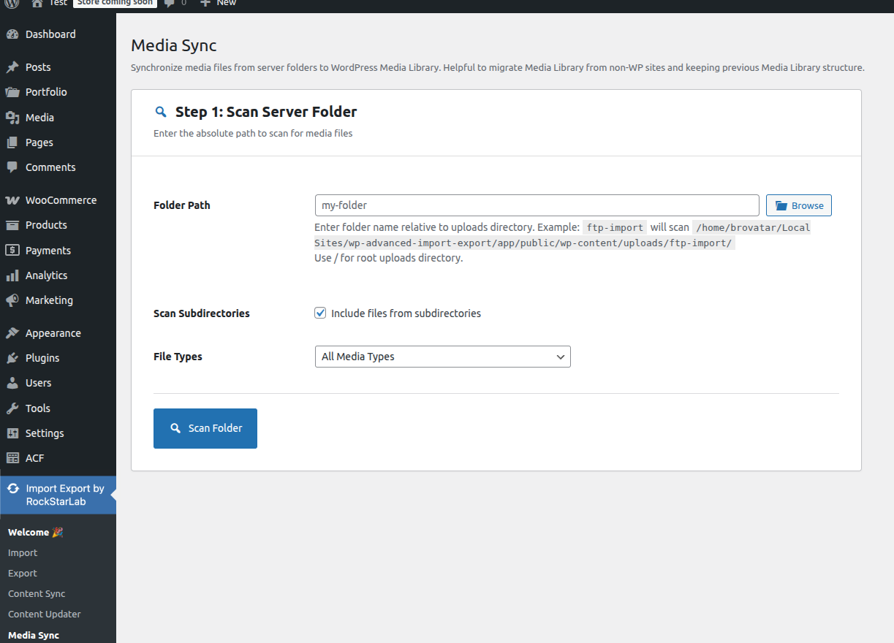
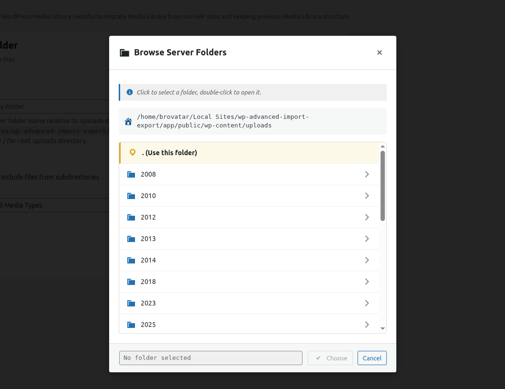
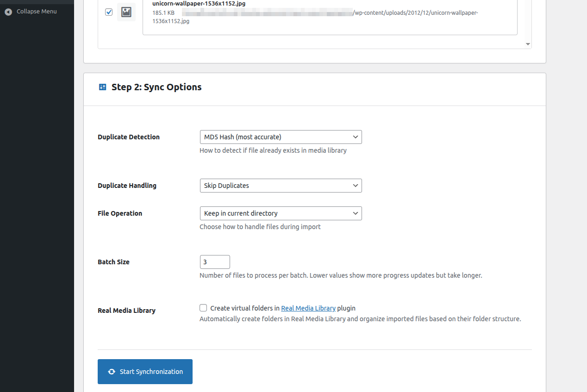

🖼️ Media Library Synchronisation
Scan any server folder for files uploaded via FTP/SFTP and register them into the WordPress Media Library — with duplicate detection.
Why Use Media Library Sync?
Many developers and content teams upload large batches of images or documents directly to the server via FTP or SFTP to bypass upload size limits or to migrate assets from another platform. Those files exist on the server but are invisible to WordPress — they do not appear in the Media Library, cannot be inserted into posts, and are not included in backups.
The Media Sync feature resolves this by scanning any server directory, detecting new files, and
creating WordPress attachment posts for each one.
Sync Workflow
Step 1 — Open the Media Sync Screen
Navigate to Advanced Import Export → Media Sync.

Step 2 — Choose a Source Folder
Use the folder browser to select the server directory that contains the files you want to import. The browser shows all directories within the server's file system that are accessible to PHP. Enable Scan Subdirectories to include all sub-folders.

Step 3 — Configure Sync Options
| Option | Description |
|---|---|
| File Types |
Choose which file types to import: images only, all WordPress-allowed types, or a custom list
(e.g., jpg, png, pdf, mp4).
|
| Duplicate Detection Method |
Hash — most accurate; computes an MD5 hash of the file content. Filename — fastest; checks if a file with the same name already exists. Filesize — balanced; compares file sizes. |
| Preserve Folder Structure | Maintain the original sub-folder hierarchy when creating attachments. Files are placed in the same relative path under wp-content/uploads/. |
| Batch Size | Number of files to process per background batch. Reduce this if you encounter memory issues. |
| Real Media Library | Pro — Automatically create a matching folder structure in Real Media Library and assign each attachment to the corresponding folder. |
Step 4 — Run
Choose files from scan results, then click Start Synchronization to begin processing.

Duplicate Detection In Detail
| Method | How It Works | Best For |
|---|---|---|
| Hash (MD5) | Computes a checksum of the file contents. Detects exact duplicates even if the filename differs. | Maximum accuracy; slower on large files |
| Filename | Checks whether an attachment with the same base filename already exists in the Media Library. | Very fast; may miss renamed duplicates |
| Filesize | Compares file sizes in bytes. Quick and reasonably accurate for large media files. | Good balance of speed and accuracy |